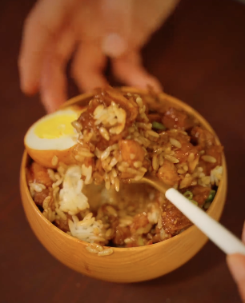

Taiwanese Pork

Image source: Doug Does Delicious Taiwanese Pork
Description
Based on a Doug Does Delicious recipe on Instagram.
Ingredients
- 1.5 lbs of pork belly, sliced (675g)
- 4 cloves garlic, minced (12g)
- 1 inch of ginger, chunks (25g)
- 1 cup chicken stock (or water) (240g)
- 1 tbsp light soy sauce (15g)
- 2 tbsp dark soy sauce (30g)
- 2 tbsp of xiaoxing cooking wine (30g)
- 1 tbsp brown sugar (12g)
- 1/2 tsp five spice powder (1g)
- 4 scallions, finely sliced
- Rice, to serve
- [optional] 4 eggs
Steps
- Prepare ingredients.
- Put all ingredients (except rice, eggs, and scallions) in pressure cooker for 20 minutes.
- While the pressure cooker is going, make rice.
- If you would like to add tea eggs, hard boil eggs and then saute in sauce for 5-10 minutes once the pressure cooker is done.
- Garnish with scallions and serve.